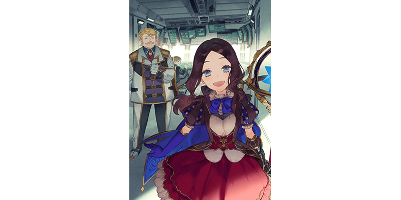
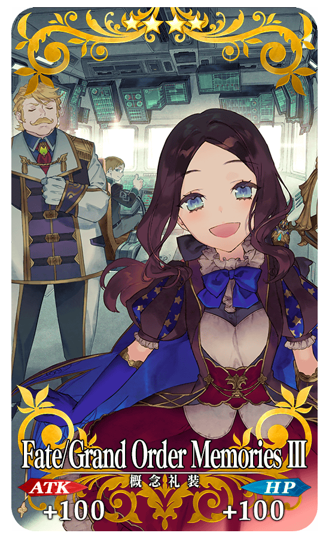

錄255張概念禮裝與55張指令紋章的「Fate/Grand Order Memories Ⅲ 概念禮裝畫集 第2部 上 2018.04-2019.12」在2021年1月27日(三)發售！
為了記念畫集的發售，舉辦『「Fate/Grand Order Memories Ⅲ 概念禮裝畫集 第2部 上」發售記念宣傳活動』！
◆舉辦期間◆
2021年1月27日(三) 17:00～2月10日(三) 11:59
◆有關從者真名的注意◆
在2018年12月31日(二) 23:00以後新配信的主線故事及期間限定活動、一部份關卡、宣傳活動及召喚中，會顯示隱藏真名的對象從者真名。
※在已經配信的主線故事、復刻活動、一部份關卡中無此限制。
Fate/Grand Order Memories Ⅲ
概念禮裝畫集 第2部 上 2018.04-2019.12

發售日:2021年1月27日(三)
尺寸:A4版
價格:2,800円(不含稅) ※發售日因地域而異。
◆商品概要◆
做為「Fate/Grand Order Memories」系列第3彈的「Fate/Grand Order Memories Ⅲ 概念禮裝畫集 第2部 上 2018.04-2019.12」是收錄在『Fate/Grand Order』第2部開幕後登場的190張概念禮裝與新登場55張指令紋章的畫集。
接續系列第1彈・第2彈，收錄的所有視覺圖是只用全彩高精細印刷來享受。
另外，也收錄插畫家的評論和介紹文字。
通過下述的期間中在迦勒底之門出現的『「Fate/Grand Order Memories Ⅲ」發售記念關卡』，得到關卡限定的概念禮裝吧！
※請注意在『「Fate/Grand Order Memories Ⅲ」發售記念關卡』沒有文字冒險部份。
◆舉辦期間◆
2021年1月27日(三) 17:00～2月10日(三) 11:59
◆關卡開放條件◆
通過「特異點F 炎上汙染都市 冬木」的御主對象
◆『「Fate/Grand Order Memories Ⅲ」發售記念關卡』限定概念禮裝◆
|  |
★★★★SR |
為了記念『「Fate/Grand Order Memories Ⅲ 概念禮裝畫集 第2部 上」發售記念宣傳活動』舉辦，在達文西工房的「稀有稜鏡交換」追加下述的新道具。
◆追加時間◆
2021年1月27日(三) 17:00～
◆交換條件◆
滿足以下條件的御主才能交換
・通過「特異點F 炎上汙染都市 冬木」
◆追加道具(永久)◆
「Fate/Grand Order Memories Ⅱ」發售記念關卡
| 追加道具 | 能交換次數 | 1次交換所需的 稀有稜鏡數 |
|---|---|---|
| 「Fate/Grand Order Memories Ⅱ」發售記念關卡 | 1次 | 3個 |
※在「稀有稜鏡交換」追加『「Fate/Grand Order Memories Ⅱ」發售記念關卡』開放權為永久，沒有交換期限。 ※關於已經通過交換對象關卡的玩家，剩餘次數會顯示為「0次」，無法交換。 ※※在通過關卡入手的限定概念禮裝會是最高等級。 ※請注意在『「Fate/Grand Order Memories Ⅱ」發售記念關卡』沒有文字冒險部份。
其他還有，期間限定『「Fate/Grand Order Memories Ⅲ」發售記念概念禮裝Pick Up召喚(每日交替)』同時舉辦！
關於詳情，請自下述橫幅確認。
■「Fate/Grand Order Memories Ⅲ」發售記念概念禮裝Pick Up召喚(每日交替)詳細情報